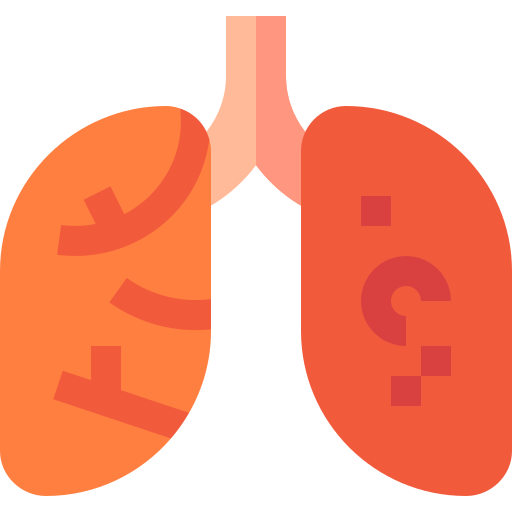
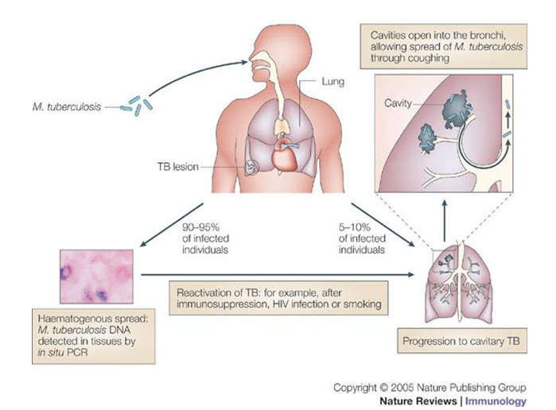

 Tuberculosis
Tuberculosis (TB)


Overview
Tuberculosis (TB) is a bacterial infection spread through inhaling tiny droplets from the coughs or sneezes
of an infected person.
It mainly affects the lungs, but it can affect any part of the body, including the tummy (abdomen), glands,
bones and nervous system.
TB is a potentially serious condition, but it can be cured if it's treated with the right antibiotics.
Symptoms of TB
Typical symptoms of TB include:
- a persistent cough that lasts more than 3 weeks and usually brings up phlegm, which may be bloody
- weight loss
- night sweats
- high temperature
- tiredness and fatigue
- loss of appetite
- swellings in the neck
You should see a GP if you have a cough that lasts more than 3 weeks or you cough up blood.
What causes TB?
TB is a bacterial infection. TB that affects the lungs (pulmonary TB) is the most contagious type, but it
usually only spreads after prolonged exposure to someone with the illness.
In most healthy people, the body's natural defence against infection and illness (the immune system) kills
the bacteria and there are no symptoms.
Sometimes the immune system cannot kill the bacteria, but manages to prevent it spreading in the
body.
You will not have any symptoms, but the bacteria will remain in your body. This is known as latent TB.
People with latent TB are not infectious to others.
If the immune system fails to kill or contain the infection, it can spread within the lungs or other parts
of the body and symptoms will develop within a few weeks or months. This is known as active TB.
Latent TB could develop into an active TB disease at a later date, particularly if your immune system
becomes weakened.
Treating TB
With treatment, TB can almost always be cured. A course of antibiotics will usually need to be taken for 6
months.
Several different antibiotics are used because some forms of TB are resistant to certain
antibiotics.
If you're infected with a drug-resistant form of TB, treatment with 6 or more different medications may be
needed.
If you're diagnosed with pulmonary TB, you'll be contagious for about 2 to 3 weeks into your course of
treatment.
You will not usually need to be isolated during this time, but it's important to take some basic precautions
to stop the infection spreading to your family and friends.
You should:
- stay away from work, school or college until your TB treatment team advises you it's safe to return
- always cover your mouth when coughing, sneezing or laughing
- carefully dispose of any used tissues in a sealed plastic bag
- open windows when possible to ensure a good supply of fresh air in the areas where you spend time
- avoid sleeping in the same room as other people
If you're in close contact with someone who has TB, you may have tests to see whether you're also infected.
These can include a chest X-ray, blood tests, and a skin test called the Mantoux test.
Vaccination for TB
The BCG vaccine offers protection against TB, and is recommended on the NHS for babies, children and adults
under the age of 35 who are considered to be at risk of catching TB.
The BCG vaccine is not routinely given to anyone over the age of 35 as there's no evidence that it works for
people in this age group.
At-risk groups include:
- children living in areas with high rates of TB
- people with close family members from countries with high TB rates
- people going to live and work with local people for more than 3 months in an area with high rates of TB
If you're a healthcare worker or NHS employee and you come into contact with patients or clinical specimens,
you should also have a TB vaccination, irrespective of age, if:
you have not been previously vaccinated (you do not have a BCG scar or the relevant documentation), and
the results of a Mantoux skin test or a TB interferon gamma release assay (IGRA) blood test are negative
Countries with high TB rates
Parts of the world with high rates of TB include:
- Africa – particularly sub-Saharan Africa (all the African countries south of the Sahara desert) and
west
Africa
- south Asia – including India, Pakistan, Indonesia and Bangladesh
- Russia
- China
- South America
- the western Pacific region (to the west of the Pacific Ocean) – including Vietnam, Cambodia and the
Philippines
Diagnosis
Several tests are used to diagnose tuberculosis (TB), depending on the type of TB suspected.
A GP may refer you to a TB specialist for testing and treatment if they think you have TB.
Pulmonary TB
Diagnosing pulmonary TB – TB that affects the lungs – can be difficult, and several tests are usually needed.
You may have a chest X-ray to look for changes in the appearance of your lungs that are suggestive of TB.
Samples of phlegm will also often be taken and checked for the presence of TB bacteria.
These tests are important in helping to decide the most effective treatment for you.
Extrapulmonary TB
Several tests can be used to confirm suspected extrapulmonary TB, which is TB outside the lungs.
These tests include:
a CT scan, MRI scan or ultrasound scan of the affected part of the body
an examination of the inside of your body using a long, thin, flexible tube with a light and camera at one
end (endoscopy) – the endoscope can be inserted through a natural opening, such as your mouth, or through a
small cut made in your skin (laparoscopy) if there's a need to check other parts of your body
urine and blood tests
a biopsy – a small sample of tissue or fluid is taken from the affected area and tested for TB bacteria
You may also have a lumbar puncture, where a small sample of cerebrospinal fluid (CSF) is taken from the
base of your spine. CSF is fluid that surrounds the brain.
The sample can be checked to see whether TB has infected your brain and spinal cord (central nervous
system).
Testing for latent TB
In some circumstances, you may need to have a test to check for latent TB – where you've been infected with
TB bacteria, but do not have any symptoms.
For example, you may need to have a test if you've been in close contact with someone known to have active
TB disease involving the lungs, or if you've recently spent time in a country where TB levels are high.
If you've just moved to the UK from a country where TB is common, you should be given information and advice
about the need for testing. Your GP may suggest having a test when you register as a patient.
Mantoux test
The Mantoux test is a widely used test for latent TB. It involves injecting a small amount of a substance
called PPD tuberculin into the skin of your forearm. It's also called the tuberculin skin test (TST).
If you have a latent TB infection, your skin will be sensitive to PPD tuberculin and a small, hard red bump
will develop at the site of the injection, usually within 48 to 72 hours of having the test.
If you have a very strong skin reaction, you may need a chest X-ray to confirm whether you have active TB
disease.
If you do not have a latent infection, your skin will not react to the Mantoux test. However, as TB can take
a long time to develop, you may need to be screened again at a later stage.
If you've had the BCG vaccination, you may have a mild skin reaction to the Mantoux test. This does not
necessarily mean you have latent TB.
Interferon gamma release assay (IGRA)
The interferon gamma release assay (IGRA) is a blood test for TB that's becoming more widely available.
The IGRA may be used to help diagnose latent TB:
- if you have a positive Mantoux test
- if you previously had the BCG vaccination – the Mantoux test may not be reliable in these cases
- as part of your TB screening if you've just moved to the UK from a country where TB is common
- as part of a health check when you register with a GP
- if you're about to have treatment that will suppress your immune system
- if you're a healthcare worker
Treatment
Treatment for tuberculosis (TB) usually involves taking antibiotics for several months.
While TB is a serious condition that can be fatal if left untreated, deaths are rare if treatment is
completed.
Most people do not need to be admitted to hospital during treatment.
Pulmonary TB
You'll be prescribed at least a 6-month course of a combination of antibiotics if you're diagnosed with
active pulmonary TB, where your lungs are affected and you have symptoms.
The usual treatment is:
- 2 antibiotics (isoniazid and rifampicin) for 6 months
- 2 additional antibiotics (pyrazinamide and ethambutol) for the first 2 months of the 6-month treatment
period
It may be several weeks before you start to feel better. The exact length of time will depend on your
overall health and the severity of your TB.
After taking antibiotics for 2 weeks, most people are no longer infectious and feel better.
However, it's important to continue taking your medicine exactly as prescribed and to complete the whole
course of antibiotics.
Taking medication for 6 months is the best way to ensure the TB bacteria are killed.
If you stop taking your antibiotics before you complete the course or you skip a dose, the TB infection may
become resistant to the antibiotics.
This is potentially serious because it can be difficult to treat and will require a longer course of
treatment with different, and possibly more toxic, therapies.
If you find it difficult to take your medicine every day, your treatment team can work with you to find a
solution.
This may include having regular contact with your treatment team at home, at the treatment clinic, or
somewhere else that's more convenient.
If treatment is completed correctly, you should not need any further checks by a TB specialist afterwards.
You may be given advice about spotting signs that the illness has returned, although this is rare.
Extrapulmonary TB
Extrapulmonary TB – TB that occurs outside the lungs – can be treated using the same combination of
antibiotics as those used to treat pulmonary TB.
If you have TB in areas like your brain or the sac surrounding your heart (pericardium), you may initially
be prescribed a corticosteroid such as prednisolone for several weeks to take at the same time as your
antibiotics. This will help reduce any swelling in the affected areas.
As with pulmonary TB, it's important to take your medicines exactly as prescribed and to finish the whole
course.
Multidrug-resistant TB
Though uncommon in the UK there are strains of TB that are resistant to 2 or more antibiotics. This is known
as multidrug-resistant TB.
Multidrug-resistant TB requires a much longer course of antibiotics; between 9 to 24 months depending on the
strain. Multidrug-resistant TB tends to have less favourable outcomes than standard TB.
Latent TB
Latent TB is where you've been infected with the TB bacteria, but do not have any symptoms of active
infection.
If you have latent TB and are aged 65 or under, treatment is usually recommended. However, the antibiotics
used to treat TB can cause liver damage in older adults.
If liver damage is a concern and you're aged between 35 and 65, your TB team will discuss with you the
advantages and disadvantages of taking treatment for latent TB.
Latent TB is also not always treated if it's thought to be drug resistant. If this is the case, you may be
regularly monitored to check the infection does not become active.
In some cases, testing and treatment for latent TB may be recommended for people who require treatment that
will weaken their immune system, such as long-term steroid medicines, chemotherapy or biological inhibitors
like TNF inhibitors. This is because there's a risk of the infection becoming active.
Treatment for latent TB generally involves:
- either taking a combination of rifampicin and isoniazid for 3 months
- or isoniazid on its own for 6 months
Side effects of treatment
Isoniazid can cause nerve damage (peripheral neuropathy). You'll be given supplements of vitamin B6
(pyridoxine) to take alongside it to reduce this risk. Your liver function will be tested before you start
treatment.
In rare cases, the antibiotics used to treat TB can cause eye damage, which can be serious. If you're going
to be treated with ethambutol, your sight should also be tested at the beginning of the course of treatment.
Contact your TB treatment team if you develop any worrying symptoms during treatment, such as:
- being sick
- yellowing of your skin and the whites of your eyes (jaundice)
- an unexplained high temperature
- tingling or numbness in your hands or feet
- a rash or itchy skin
- changes to your sight, such as blurred vision
Rifampicin can reduce the effectiveness of some types of contraception, such as the combined contraceptive
pill. You should use an alternative method of contraception, such as condoms, while taking rifampicin.
Rifampicin can also interact with other medication, so it's important that your TB team know about all of
the medicine you're taking before you start treatment for TB.
Preventing the spread of infection
If you're diagnosed with pulmonary TB, you'll be contagious up to about 2 to 3 weeks into your course of treatment.
You will not usually need to be isolated during this time, but it's important to take some basic precautions to stop TB spreading to your family and friends.
You should:
- stay away from work, school or college until your TB treatment team advises you it's safe to return
- always cover your mouth – preferably with a disposable tissue – when coughing, sneezing or laughing
- carefully dispose of any used tissues in a sealed plastic bag
- open windows when possible to ensure a good supply of fresh air in the areas where you spend time
- not sleep in the same room as other people – you could cough or sneeze in your sleep without realising it
What if someone I know has TB?
When someone is diagnosed with TB, their treatment team will assess whether other people are at risk of infection.
This may include close contacts, such as people living with the person who has TB, as well as casual contacts, such as work colleagues and social contacts.
Anyone who's thought to be at risk will be asked to go for testing, and will be given advice and any necessary treatment after their results.